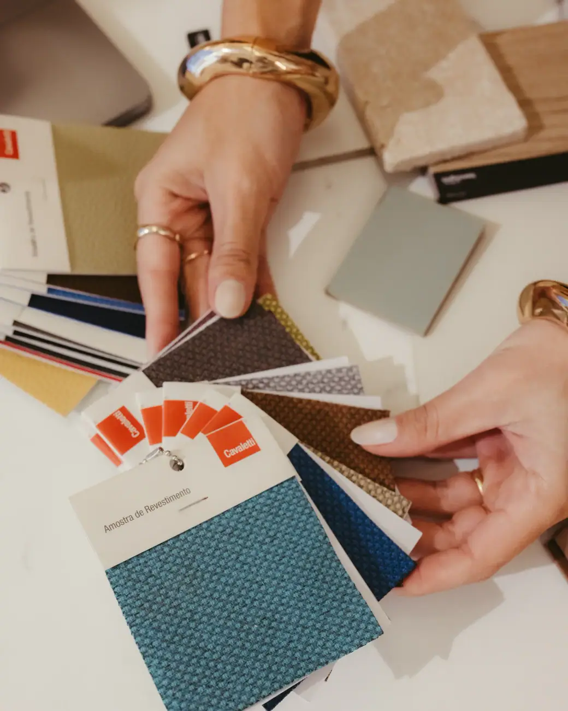
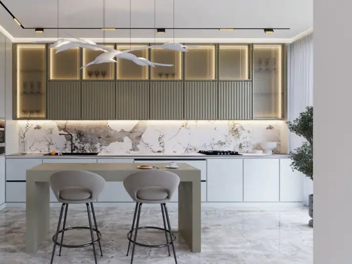
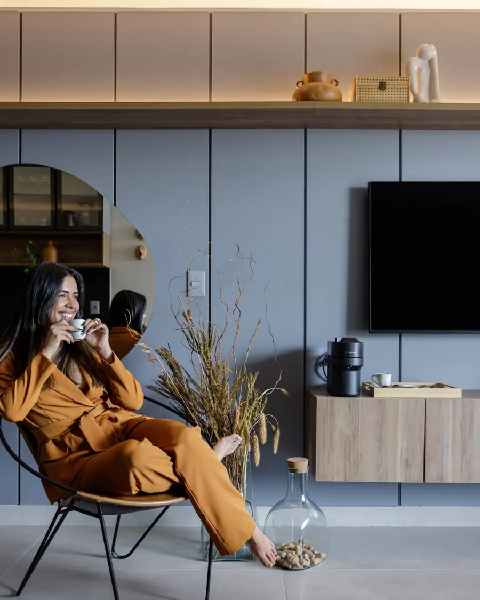

01
01Design de interiores
Ambientes funcionais e acolhedores: layout, materiais, iluminação, marcenaria e escolha de cada peça.
Conversar sobre issoAmbientes pensados para a sua rotina, presencialmente ou on-line. A designer Jocasta Fonseca entende exatamente o que você precisa e cuida de cada detalhe da compra à entrega.

Olá! Quero reformar meu apartamento e não sei por onde começar09:12
Que bom que chamou 😊 Me conta como é o espaço e o que você imagina. Se tiver a planta, pode mandar.09:13 ✓✓
Mando a planta e umas fotos!09:14
Conversa ilustrativa
Serviços
Escolha o serviço e fale direto com o estúdio da Jocasta Fonseca. Mande fotos, medidas ou a planta do imóvel: a mensagem já vai pronta no WhatsApp.
01Ambientes funcionais e acolhedores: layout, materiais, iluminação, marcenaria e escolha de cada peça.
Conversar sobre isso 02
02Uma ou poucas visitas para orientar cores, layout, iluminação e compras, sem projeto completo.
Conversar sobre isso
03Projeto de cozinhas, áreas gourmet e móveis sob medida, detalhados para a marcenaria executar.
Conversar sobre isso 04
04Reformas planejadas para não ter surpresa: projeto executivo, orçamento e cronograma claros.
Conversar sobre isso 05
05Lojas, clínicas, escritórios e restaurantes que traduzem a marca e funcionam bem no dia a dia.
Conversar sobre isso
O estúdio
Uma cliente fez um ambiente da casa nos Estados Unidos, todo on-line, e elogia a atenção e a proatividade da Jocasta mesmo com a distância.
Tire sua dúvida agora
As dúvidas que todo cliente tem, respondidas com as informações do estúdio da Jocasta Fonseca. Se quiser algo mais, é só chamar no WhatsApp.
Onde fica o estúdio da Jocasta Fonseca?agora
O estúdio da Jocasta Fonseca fica na Av. Rio Grande do Sul, 1345 (Evolution Business Center), Estados, em João Pessoa (PB), CEP 58030-021. Pelo botão "Traçar rota" nesta página você abre o caminho direto no Google Maps.agora ✓✓
Como funciona
Você conta o que quer, como vive e quanto pretende investir. Fotos e planta ajudam muito.
Estudo, imagens 3D e detalhamento: você aprova cada etapa antes de seguir.
Projeto executivo para os fornecedores e, se quiser, acompanhamento da obra até a entrega.
Segunda a sexta: 09h–17h
Avaliações no Google
Avaliações reais de clientes publicadas no Google Maps.
“Excelente profissional! Fizemos um ambiente da minha casa nos EUA, tudo on-line e Jocasta foi atenciosa e proativa a todo o tempo apesar da distância! Já estamos com a nossa próxima reunião marcada pra fazer a minha cozinha dessa vez!”
“Atenciosa do início ao fim! Uma profissional de escuta atenta, o projeto entregou exatamente o que pedimos, ou melhor, sonhamos! Um profissional que sonha junto com o cliente tem nossa admiração e confiança.”
“Excelente profissional, consegue entender exatamente o que estamos querendo/precisando, é atenta a todos os detalhes e super prestativa no momento da obra!”
“Ótima profissional, serviço confiável, entregue no prazo estipulado e documentos bem organizados. Pessoa muito atenciosa com os clientes.”
“Profissional incrível, super talentosa e atenciosa! Prestou atenção aos detalhes e superou as expectativas!”
Dúvidas
Não achou a sua? Pergunte direto no WhatsApp.
O estúdio da Jocasta Fonseca fica na Av. Rio Grande do Sul, 1345 (Evolution Business Center), Estados, em João Pessoa (PB), CEP 58030-021. Pelo botão "Traçar rota" nesta página você abre o caminho direto no Google Maps.
O estúdio da Jocasta Fonseca atende segunda a sexta, das 09h às 17h. Não abre aos sábados e aos domingos. O agendamento é feito pelo WhatsApp.
É só chamar no WhatsApp (83) 98710-0525 pelo botão "Conversar sobre o projeto". Mande uma mensagem pelo WhatsApp contando o que você quer fazer, com fotos ou a planta se tiver. É marcada uma conversa para entender o seu espaço, a sua rotina e o seu orçamento.
Design de interiores, Consultoria de decoração, Cozinhas e marcenaria, Reforma de apartamentos e projetos comerciais. O escopo e o investimento são definidos depois da primeira conversa, de acordo com o seu projeto.
O arquiteto pode projetar construções e alterar estrutura, com registro no CAU. O designer de interiores cuida dos ambientes internos: layout, materiais, mobiliário e iluminação.
É um atendimento mais curto, com visitas e orientações práticas sobre cores, layout e compras, para quem não precisa de um projeto completo.
Para reformas com demolição de paredes, troca de revestimentos ou instalações, o projeto evita erros e gastos extras, e muitos condomínios exigem um responsável técnico (RRT ou ART).
Onde fica
É só chamar
Fale com o estúdio da Jocasta Fonseca pelo WhatsApp e conte o que você quer transformar.